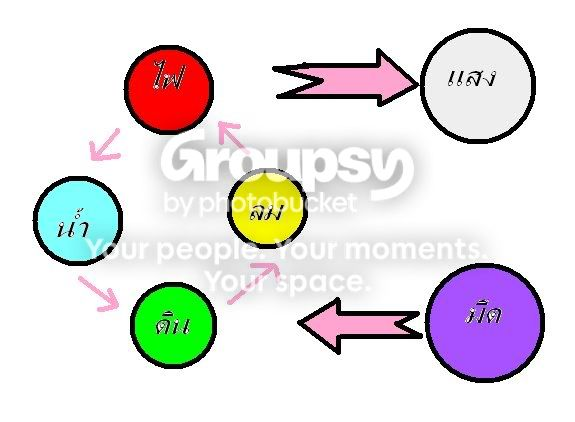

ตอนที่ 7 อาชีพเยอะจางเลยคับ >.<
หลังจากที่อาคาโดะได้รับบัตรเป็นชาวเมืองของที่นี่ ต่อไปก็เป็นเรื่องอาชีพกันหละ
Ginny – อาชีพใน Acronia Land. ของเราเนี่ยมีถึง
37 อาชีพ แบ่งเป็น 3 คลาส 3 สาย คือสาย Ft Su Bp ซึ่งแต่ละสายมีรายละเอียดดังนี้
1. Ft สาย Fighter ขั้นแรกมี 4 อาชีพดังนี้
1. Swordman – นักดาบ เป็นอาชีพที่ใช้ดาบเป็นอาวุธ โดดเด่นในด้านการทำ Damage ที่รุนแรง
2. Fencer – นักรบ อาวุธนี้ทวนเป็นอาวุธ โดดเด่นในด้านความอึด ทนทาน
3. Scout – สายลับ อาวุธที่ใช้คือ มีดสั้นและสนับ โดดเด่นเรื่อง ความเร็ว การหลบ และ Critical.
4. Archer – นักธนู อาวุธที่ใช้ แน่นอนธนู โดดเด่นเริองการโจมตีในระยะไกล
2. Su สาย Spell User ขั้นแรกมี 4 อาชีพเช่นกัน
1. Wizard – ผู้ใช้เวทย์มนต์สายกลาง ไม่เกี่ยงเรื่องธาตุ เป็นสายเวทย์ที่มีความหลากหลายไม่ว่าจะเป็นรุกหรือรับ
2. Shaman – ผู้ใช้มนต์แห่งดินน้ำลมไฟ เป็นสายที่มีการโจมตีที่หลากหลายทางด้านของเวทย์มนต์
3. Vates – ผู้ใช้มนต์แห่งแสง เป็นอาชีพที่เป็นตัวสำคัญ ที่จะช่วยให้เพื่อนสามารถผ่านภาวะคับขัน ไปได้ ถือได้ว่าเป็นอาชีพที่โดดเด่นทางด้านการช่วยเหลือพวกพ้อง แต่ก็ด้อยด้านการโจมตี เมื่อเทียบกับ Su อาชีพอื่นๆ
4. Warlock – ผู้ใช้มนต์ศาสตร์มืด เป็นอาชีพที่เต็มเปลี่ยมไปด้วยลูกเล่นที่หลายหลาย ไม่ว่าจะเป็นการโจมตีหรือสร้างความรำคาญให้ผู้อื่น เป็นอีกอาชีพในสายนี้ที่มีคนนิยมเล่นกันมาก
และนี่ตารางแห่งธาตุดูเองนะคับ 
3. สาย Bp สาย Back Packer ขั้นแรกมี 4 อาชีพ เช่นเคย
1. Tatarabe – ผู้สกัด Item จากแร่ และ หิน
2. Farmer – ผู้สกัด Item จากพืช
3. Renger – นักผจญภัย ผู้เชี่ยวชาญด้านการวางกับดัก
4. Merchant – นักค้าขาย ตามชื่ออาชีพนี้สามารถซื้อของจากพ่อค้าได้ถูกและขายได้แพง (พ่อค้าที่ป็น NPC นะไม่ใช่ Golem)
อาชีพ 12 อาชีพนี้เป็นอาชีพ ขั้นแรกที่นายจะต้องเป็น นายสนใจอาชีพไหนล่ะ ฮื่อๆๆๆ (เหนื่อย)
เพิ่มเติม
http://www.eco.in.th/information_jobs_tree.html
Ginny พรรณนาซะเยอะแยะ เต็มไปหมดแล้วอาคาโดะจะเลือกอาชีพไหนดีนะ
อาคาโดะ – ข้าจะเป็นสิ่งที่ข้าเคยเป็น
Ginny – เป็นอะไรล่ะ
อาคาโดะ – Warlock ไงล่ะ!!!
แล้ว Ginny ก็พาอาคาโดะไปที่ Black Church เพื่อไปหานักบวชมืด
Ginny – สวัสดีค่ะท่านนักบวชมืด
นักบวชมืด – สวัสดี เจ้าคงมาเปลี่ยนอาชีพสินะ
Ginny – ไม่ใช่ชั้นแต่เป็นนี่หมาตัวนี้ต่างหาก
นักบวชมืด - หมารึ ?
Ginny – ใช่แล้วล่ะ
นักบวชมืด – โอเค
นักบวชดำจะให้อาคาโดะไปทำอารายหนอ แล้วเปลี่ยนเป็นอาชีพนี้ อยากรึเปล่า ถ้าอยากรู้ติดตามตอนต่อไปนะคับ
To be continue
 [
[